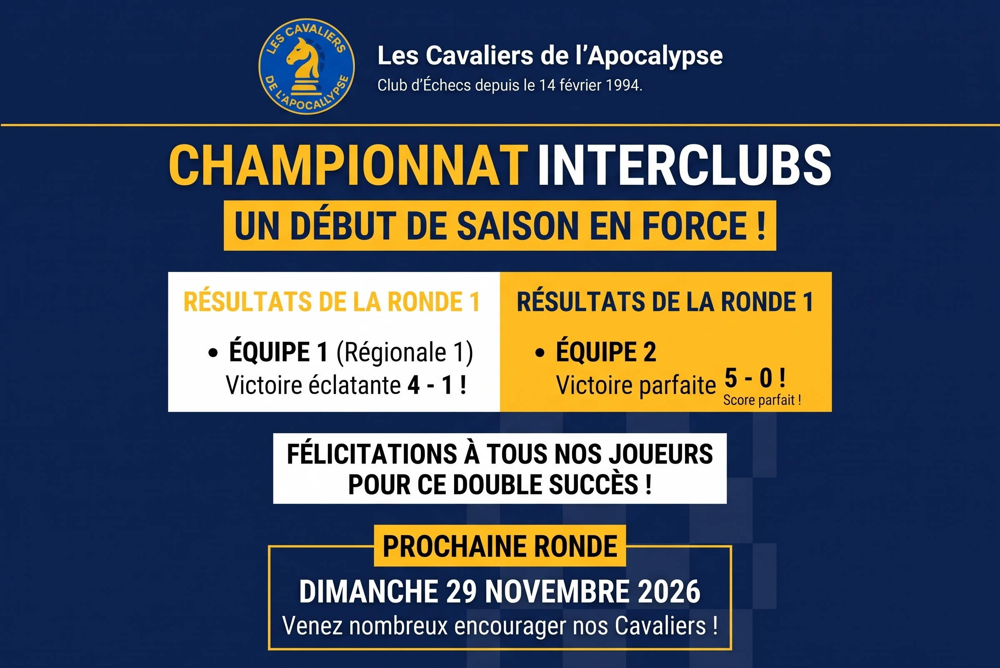

Championnat Interclubs : Un début de saison en force totale !

Le coup d'envoi du Championnat Interclubs de la FFE a sonné le week-end dernier, et Les Cavaliers de l'Apocalypse ont frappé un grand coup dès la première ronde. En déplacement, notre équipe première s'est imposée avec autorité (4-1) en Régionale 1, tandis que l'équipe réserve signait un rarissime grand chelem (5-0). Analyse détaillée d'un week-end parfait.
Régionale 1 : L'équipe fanion dicte sa loi à l'extérieur (4 - 1)
Pour cette entame de saison 2026-2027, le tirage n'avait rien d'un cadeau pour notre escouade fanion, opposée en déplacement à un collectif réputé coriace. Mais sous la conduite de son capitaine Thomas Lambert (1979 Elo), le groupe a fait preuve d'une cohésion et d'une détermination à toute épreuve.
À la table 1, Thomas a montré la voie dans une Variante Rossolimo de la Défense Sicilienne. Exploitant avec une grande patience une case faible en d5, il a étouffé les contre-chances adverses avant de forcer l'abandon au 38ᵉ coup après un gain de qualité décisif. À ses côtés, l'incontournable Stephanie Sendre (1812 Elo) a délivré un modèle de sang-froid positionnel, convertissant un avantage microscopique en finale de tours avec la rigueur d'un grand maître.
Le point d'orgue est venu de l'échiquier 3 : notre jeune maestro Matteo Grolleau (1882 Elo, 1998 Rapide) a électrisé la rencontre en sacrifiant son cavalier en f7 pour ouvrir la forteresse du roi noir, concluant le combat par un réseau de mat imparable en 28 coups. Avec la nulle solide verrouillée par Pierre Balter (1730 Elo) au 4ᵉ échiquier, la victoire 4-1 était scellée et propulse Les Cavaliers seuls en tête de leur groupe.
Équipe 2 : Un Grand Chelem historique (5 - 0 net et sans bavure)
Si la victoire de l'équipe fanion était attendue, la performance de l'équipe réserve relève tout simplement de l'exploit collectif. Opposée à une équipe expérimentée, la formation bis a signé un carton plein historique de 5 victoires sur 5 échiquiers !
Les piliers de la famille Daviet ont été irréprochables : Bertrand Daviet (1730 Elo) et son frère Stephane Daviet (1723 Elo) ont neutralisé les deux premiers échiquiers rivaux en remportant deux finales techniques limpides. Au troisième échiquier, Gwenegan Mikaty (1721 Elo) a fait parler son sens de l'initiative en perçant au centre au 22ᵉ coup, tandis qu'Emmanuel Grolleau (1715 Elo) dominait la table 4 avec une sérénité remarquable.
La cerise sur le gâteau revient à notre jeune cadet Khanh-Hai Nguyen (1676 Elo, né en 2008). Aligné au cinquième échiquier, le lycéen n'a pas tremblé : opposé à un joueur adulte classé, il a défendu avec brio un Gambit Dame refusé avant de porter l'estocade en zeitnot (pression de temps) au 41ᵉ coup.
Tableau récapitulatif des résultats
| Division | Échiquier | Joueur des Cavaliers | Résultat |
|---|---|---|---|
| Régionale 1 (Score : 4 - 1) |
Table 1 | Thomas Lambert (1979) | 1 - 0 |
| Table 2 | Stephanie Sendre (1812) | 1 - 0 | |
| Table 3 | Matteo Grolleau (1882) | 1 - 0 | |
| Table 4 | Pierre Balter (1730) | ½ - ½ | |
| Départementale (Score : 5 - 0) |
Table 1 | Bertrand Daviet (1730) | 1 - 0 |
| Table 2 | Stephane Daviet (1723) | 1 - 0 | |
| Table 3 | Gwenegan Mikaty (1721) | 1 - 0 | |
| Table 4 | Emmanuel Grolleau (1715) | 1 - 0 | |
| Table 5 | Khanh-Hai Nguyen (1676) | 1 - 0 |
Cap sur la Ronde 2 à domicile !
Le prochain rendez-vous officiel de la saison d'interclubs se tiendra le dimanche 29 novembre 2026 à 14h15. Nos deux escouades recevront leurs adversaires respectifs au sein de notre salle à l'Espace Associatif d'Angers. Venez nombreux encourager nos joueurs ! Renseignements : lescavaliers@notremail.com.
Sources & mentions :
- Rédaction & visuels : Textes et illustrations élaborés avec l'assistance d'une IA.
- Données sportives : Données réelles issues des licenciés officiels du club (FFE).
- Fédération Française des Échecs - Résultats Interclubs
- Fédération Internationale des Échecs (FIDE)